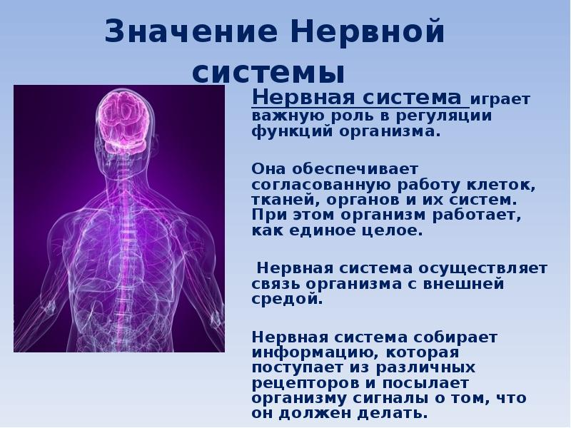
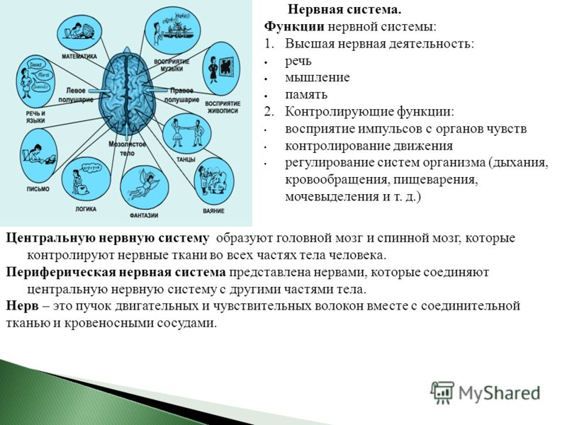
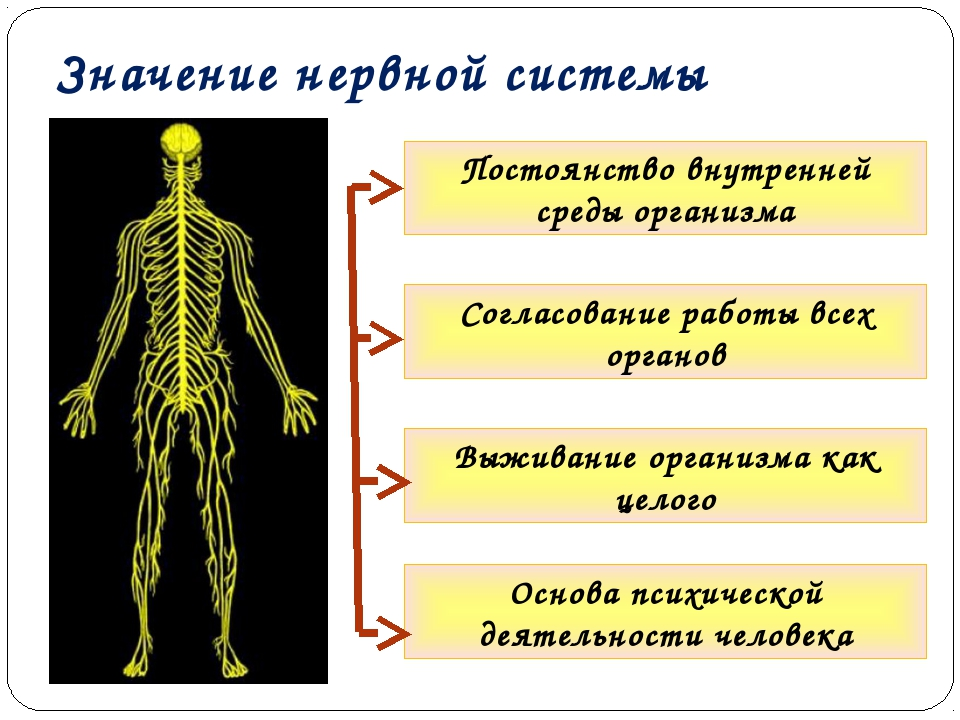
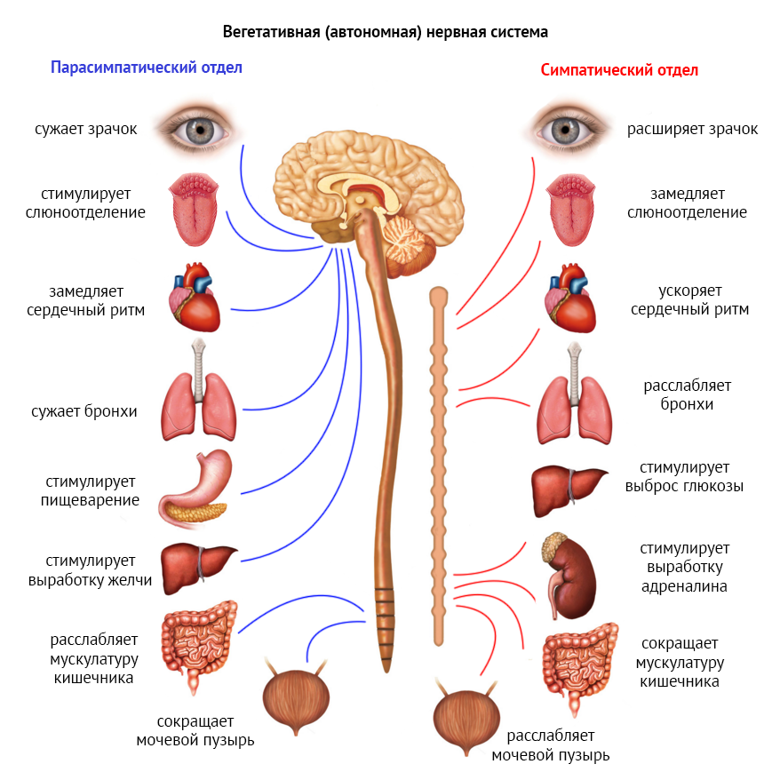
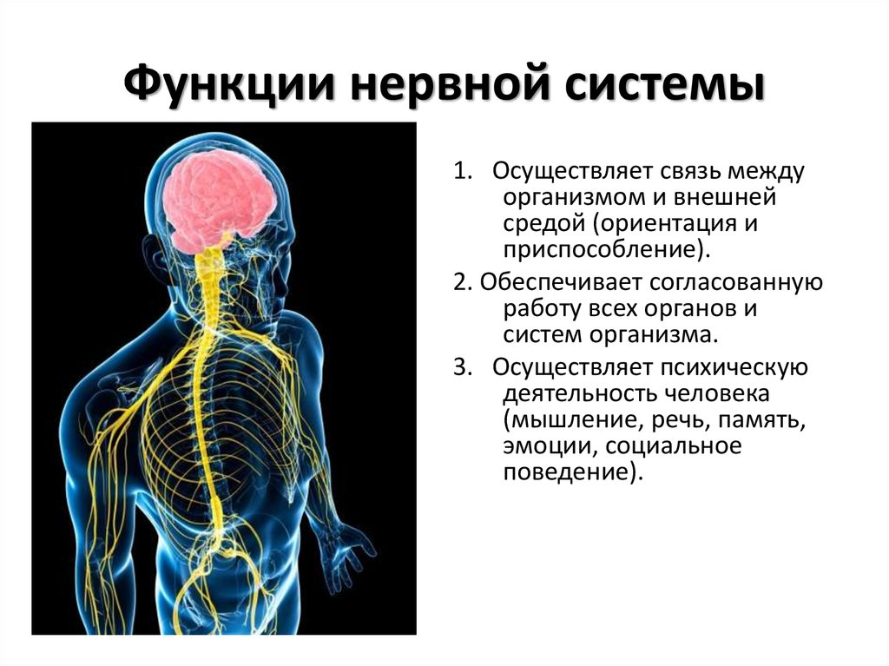
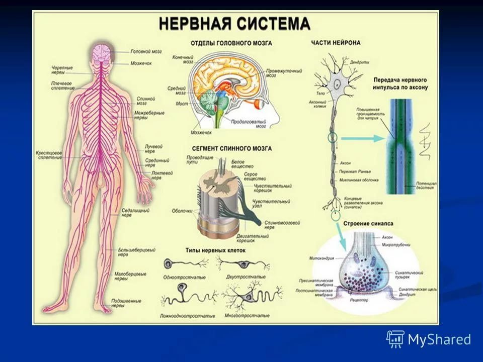

ЭЛЕУТЕРОКОККА
ШИПОВНИКА ПЛОДЫ (ИЗМЕЛЬЧЕННЫЕ)
ШАЛФЕЯ ЛИСТ
ЧЕРНИКИ ПЛОДЫ
ЧЕРЕДЫ ТРАВА
ЧАГА
СОСНОВЫЕ ПОЧКИ
ЧАБРЕЦА ТРАВА
ХВОЩА ТРАВА
УСПОКОИТЕЛЬНЫЙ


Нарушение функций нервной системы
Симптомы заболеваний нервной системы
Лечение заболеваний нервной системы
Лечение ожирения, т.е. похудение проводиться комплексно и включает в себя:
— диету;
—физическую нагрузку;
— лекарственные препараты (по назначению врача);
— лечение осложнений (если таковые имеются).
Для лечения 1 и 2 степени ожирения достаточно правильного питания и физической нагрузки.
Лечение заболеваний нервной системы
Лечение заболеваний нервной системы зависит от их типа и симптомов, назначается врачом и требует интенсивной терапии в условиях стационара.
Чтобы избежать заболеваний нервной системы, следует вовремя диагностировать и лечить инфекции, вести здоровый образ жизни, отказавшись от алкоголя и наркотиков, полноценно питаться, избегать стрессов и переутомления. При появлении каких-либо тревожных симптомов обязательно следует обратиться к врачу.
Причины заболеваний нервной системы
Выше упоминалось, что среди причин заболеваний нервной системы очень часто фигурируют различные инфекционные возбудители:
— бактерии (пневмококк, менингококк, стафилококк, бледная трепонема и стрептококк);
— различные грибки и паразиты;
— вирусы, передающиеся воздушно-капельным путем (арбовирусы).
     